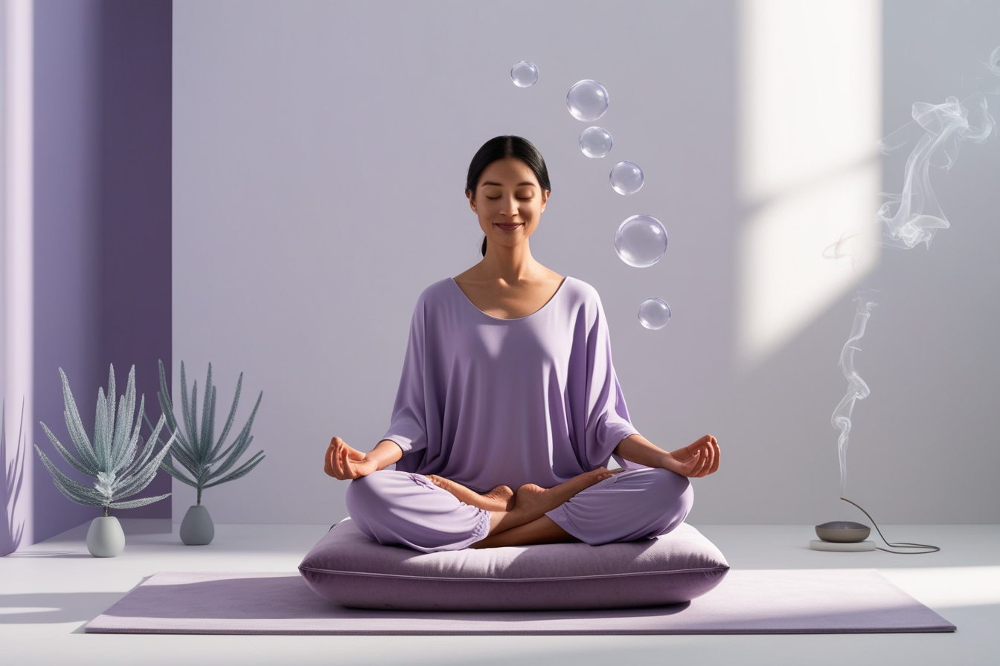

Meditación Mindfulness para Principiantes
La meditación mindfulness es una práctica poderosa que puede ayudarte a reducir el estrés, mejorar la concentración y aumentar tu bienestar general. Si eres nuevo en esta práctica, aquí tienes una guía simple para comenzar:
¿Qué es la meditación mindfulness?
La mindfulness es la práctica de estar plenamente presente y consciente en el momento actual, sin juzgar las experiencias que surgen.
Beneficios de la meditación mindfulness
- Reduce el estrés y la ansiedad
- Mejora la concentración y la memoria
- Aumenta la autoconciencia
- Fomenta el bienestar emocional
- Mejora la calidad del sueño
Cómo empezar con la meditación mindfulness
- Encuentra un lugar tranquilo: Busca un espacio donde puedas sentarte cómodamente sin distracciones.
- Establece un tiempo: Comienza con sesiones cortas de 5-10 minutos y aumenta gradualmente.
- Adopta una postura cómoda: Puedes sentarte en el suelo, en un cojín o en una silla con la espalda recta.
- Enfócate en tu respiración: Presta atención a tu respiración, notando cómo entra y sale el aire de tu cuerpo.
- Observa tus pensamientos: Cuando surjan pensamientos, simplemente obsérvalos sin juzgarlos y vuelve a enfocarte en tu respiración.
- Sé amable contigo mismo: Es normal que la mente divague. Cada vez que notes que te has distraído, gentilmente vuelve tu atención a la respiración.
Consejos para mantener una práctica regular
- Establece un horario regular para meditar
- Comienza con sesiones cortas y aumenta gradualmente
- Usa aplicaciones o guías de meditación si necesitas ayuda
- Únete a un grupo de meditación para mantenerte motivado
- Sé paciente y amable contigo mismo en el proceso
Recuerda, la meditación mindfulness es una práctica. No te preocupes si te resulta difícil al principio. Con tiempo y paciencia, notarás los beneficios en tu vida diaria.
¿Quieres aprender más sobre meditación mindfulness?
Únete a nuestras clases de meditación y mindfulness para principiantes.
Ver horarios de clases
Comentarios